SentinelSCADA › Server Setup Guide › Part 4
This part uses two computers: the server (in this guide, the virtual machine from Part 1) and a remote PC that connects to it. Here the remote PC is the computer that hosts VirtualBox, reaching the server over the host-only network. The server address you see will differ from the one in the screenshots.
On the server, open Advanced Settings… from the tray menu. On the Networking tab, change Bind Address from localhost to 0.0.0.0 (all interfaces — LAN access), then press Save.
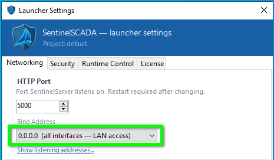
The Launcher asks whether to restart the server now. The change only takes effect after a restart, so choose Yes.
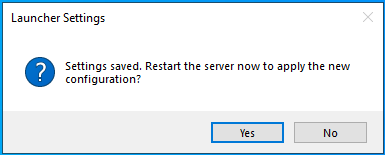
Windows blocks incoming connections to the server until you allow them. In Part 2 we ran Prepare-SentinelHost.ps1 without opening any ports. Run it again from an elevated PowerShell, this time with -OpenFirewall. It skips anything that is already installed.
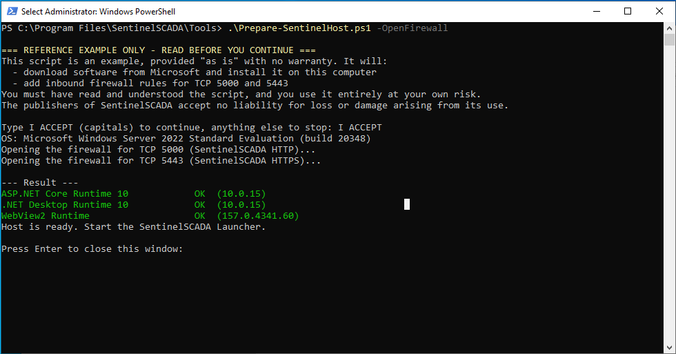
-OpenFirewall adds rules for ports 5000 and 5443.Port 5000 is the plain HTTP port that we use here. Port 5443 is for HTTPS, which we set up in Part 5.
The remote PC needs the server’s IP address. There are two ways to find it. The first is to run ipconfig in PowerShell on the server and read the IPv4 address of the adapter on your network. In this guide that is the host-only adapter, 192.168.56.103.
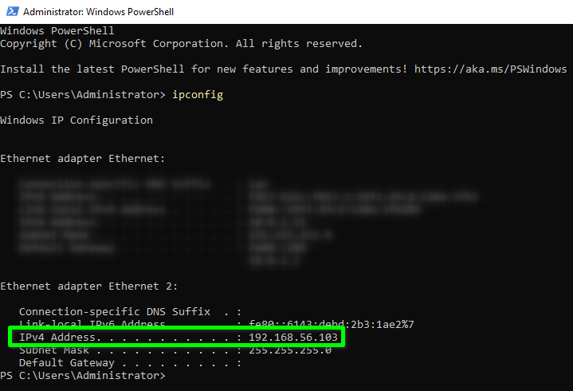
ipconfig. Your adapter and address will differ.The second is to open Advanced Settings… and click Show listening addresses… under Bind Address. It lists the addresses the server is listening on, ready to type into a browser.
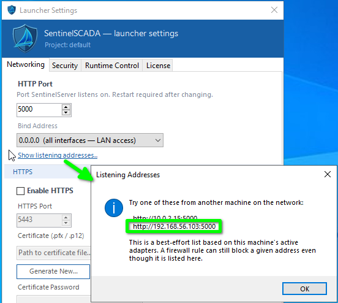
The dialog says that this is a best-effort list based on the computer’s active adapters, and that a firewall rule can still block an address even though it is listed. On the VirtualBox setup from Part 1, 10.0.2.15 is the NAT adapter, which the host cannot reach, so use the host-only address.
On the remote PC, open a browser and go to http://, the server’s address, and :5000. While the server is still in Design Mode, the browser waits on a standby screen.
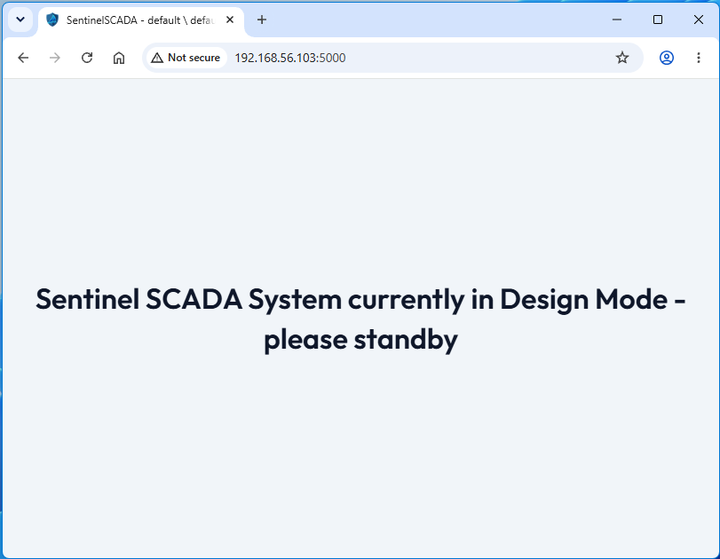
The browser warns Not secure because the address is plain HTTP. On a private network that is expected, and Part 5 adds HTTPS.
The remote client stays on this screen until someone at the server itself chooses View > Run Mode, as in Part 3. As soon as the server is in Run Mode, the remote browser shows the project. Since login is required, a banner invites the visitor to sign in.
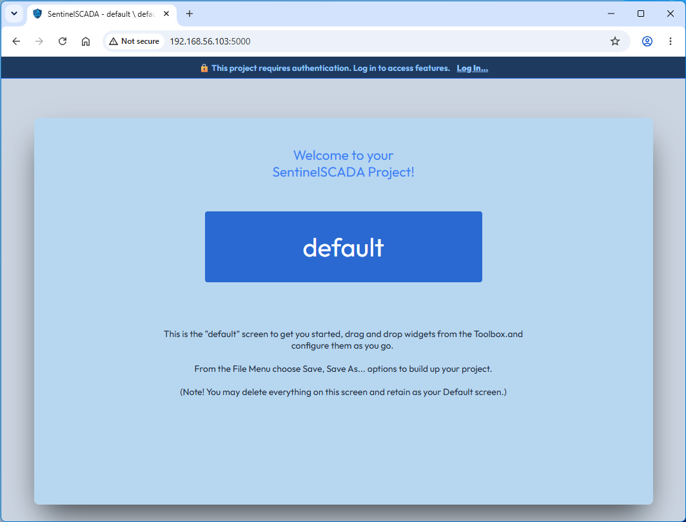
Without a licence file, SentinelSCADA runs as an evaluation edition, which serves one web client at a time. A second browser tab or computer sees this message instead of the project.
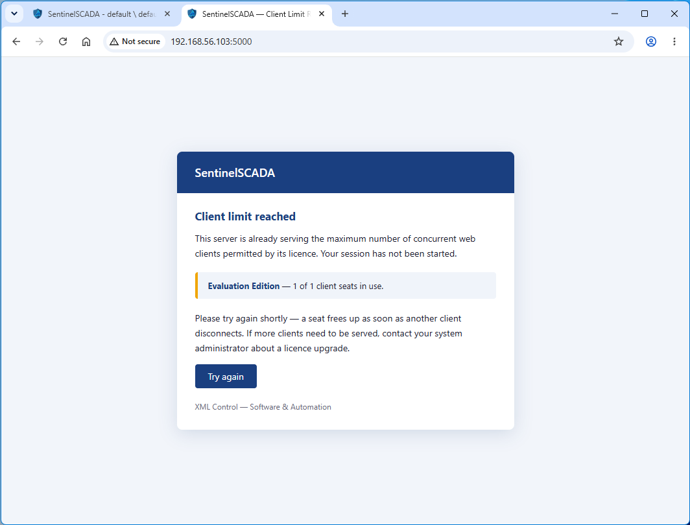
The seat frees up when the first client disconnects, and Try again then lets the second one in. Refreshing the page in the browser that already holds the seat is fine.
Switching between Design, Run and Kiosk mode affects every connected client at once, so the server controls who may do it. Open Advanced Settings… and choose the Runtime Control tab.
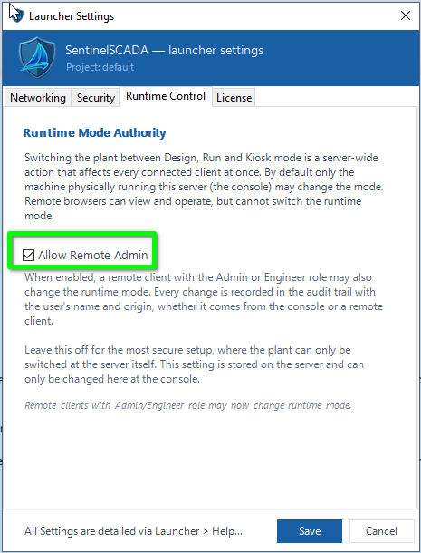
If you have no good reason to change the mode from elsewhere, leave it off. The setting is stored on the server and can only be changed at the console. Like the bind address, it needs a server restart.
While the server restarts, a connected remote browser shows Connection lost and keeps trying to reconnect.
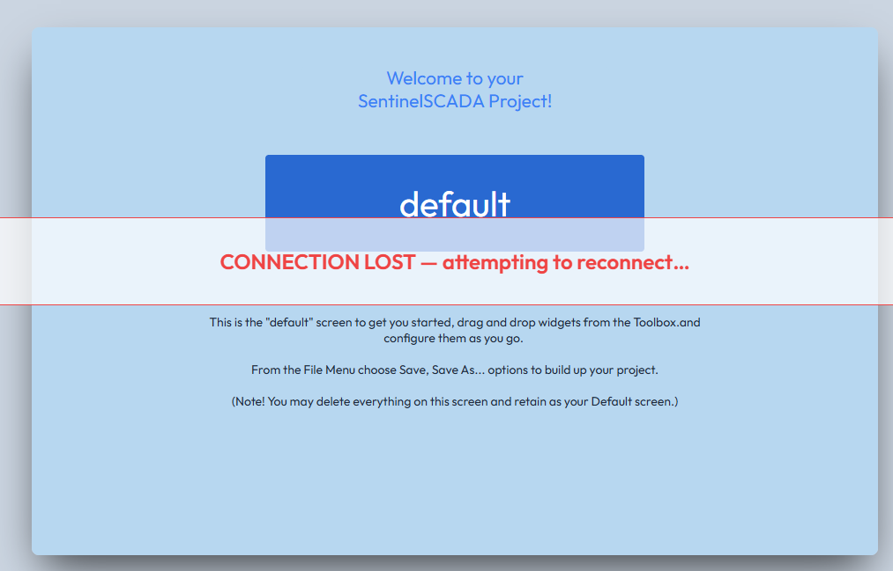
When the server is back and in Run Mode, the remote browser reconnects by itself. Without signing in it can look but cannot change anything.
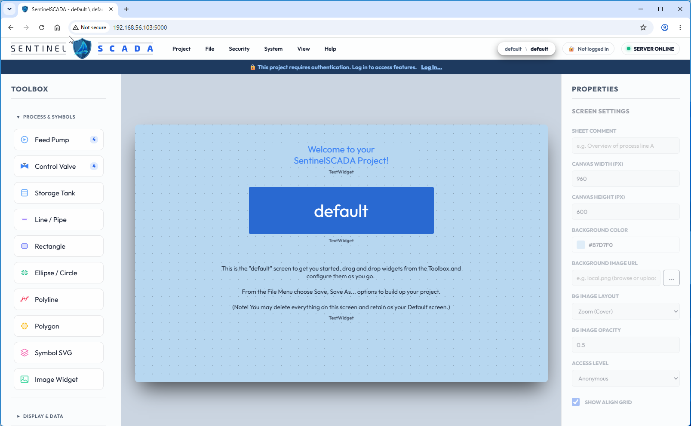
To stop the server, right-click the Launcher icon and choose Quit Sentinel Server.
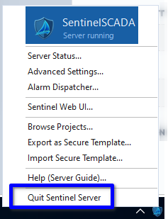
A confirmation warns that this disconnects every client, and that any active PLC or Modbus drivers will stop and live data will be lost until the server is restarted.
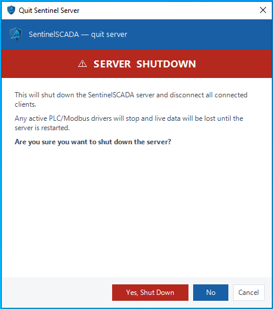
Because authentication is on, an Admin or Engineer must then authorise the shutdown with their username and password. You may also choose a reason.
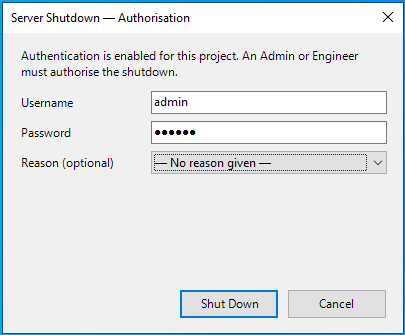
Get-Process SentinelServer, SentinelLauncher -ErrorAction SilentlyContinueStop-Process -Name SentinelServer, SentinelLauncher -Force -ErrorAction SilentlyContinueWithout help, the server only runs after somebody starts the Launcher. To have it start by itself, run Register-SentinelAutostart.ps1, from the same Tools folder as the other scripts. Right-click it and choose Run with PowerShell.
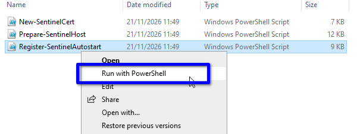
It asks you to type I ACCEPT, and then registers a scheduled task.
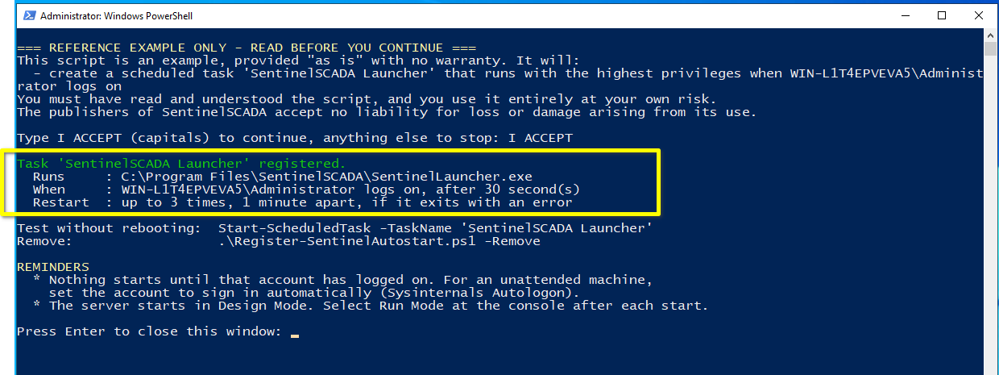
The task starts the Launcher 30 seconds after the account logs on, and tries again up to three times, a minute apart, if it fails. Allow about 30 seconds after signing in before the server is up.
To try it without rebooting, run Start-ScheduledTask -TaskName 'SentinelSCADA Launcher'. To remove the task, run the script again with -Remove.
You now have a server that other computers on your private network can reach, that you know how to shut down properly, and that starts itself after a restart.
If you are using a virtual machine, shut down the guest and take a snapshot called Remote access working.